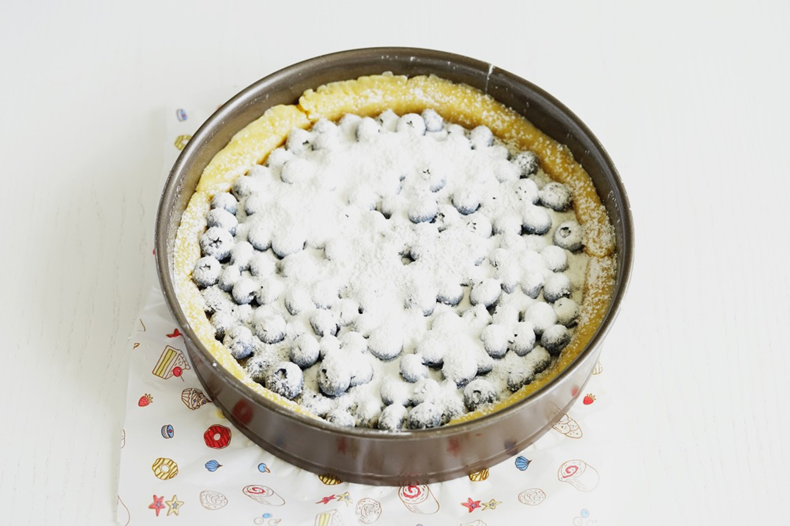

45 минут
45 минут
Ингриденты:
Сахар, 150г.
Яйца куриные, 2шт.
Пшеничная мука, 170г.
Рарзрыхлитель, 1ч.л.
Соль, 1 щепотка
Голубика, 100г.
Сливочное масло, 110г.
Минимум продуктов и затраченного времени, а результат каждый раз восхищает, хочется приготовить это блюдо снова и снова! Речь не о ресторанном рецепте, не о шикарном торте, а об обыкновенном и одновременно необыкновенном пироге! Легкий и воздушный, в меру сладкий. Можно с ягодами, можно с яблочками, а можно и с персиками попробовать. Поэтому этот пирог никогда не надоест. Он многолик, не знаешь, с чем он будет сегодня! Сегодня он у меня с голубикой. Приятная кислинка делает его очень летним. Приятного аппетита и отличных летних деньков!
Шаг 1
Подготовка ингридиентов
Есть несколько моментов, которые стоит учесть перед его приготовлением. Сливочное масло должно быть комнатной температуры. Лучше, если оно будет очень хорошего качества. Именно масло даёт основной вкус готовой основе пирога. Не стоит заменять сливочное масло на маргарин. Иначе ваш пирог получится жирным и более плотным. Включить духовку на 180 градусов для разогрева.
Шаг 2
Приготовление теста
В глубокую чашку выложить сливочное масло комнатной температуры. Добавить в масло яичные желтки, сметану и сахарную пудру. Не стоит заменять яичные желтки на целые яйца. Это приведёт к тому, что тесто получится более плотным и не таким нежным. Использование в тесте сахарной пудры позволяет добиться более воздушной текстуры основы пирога. Жирность сметаны не имеет существенного значения. В данном случае использовалась сметана с жирностью 20%. Её можно заменить на такое же количество густого несладкого йогурта.
Шаг 3
Перемешиваем
В глубокую чашку выложить сливочное масло комнатной температуры. Добавить в масло яичные желтки, сметану и сахарную пудру. Не стоит заменять яичные желтки на целые яйца. Это приведёт к тому, что тесто получится более плотным и не таким нежным. Использование в тесте сахарной пудры позволяет добиться более воздушной текстуры основы пирога. Жирность сметаны не имеет существенного значения. В данном случае использовалась сметана с жирностью 20%. Её можно заменить на такое же количество густого несладкого йогурта.

Шаг 4
Замешиваем тесто и выкладываем
его в форму
его в форму
Замесить мягкое тесто. Обратите внимание на то, что замешивать тесто нужно очень быстро. Иначе сливочное масло начнёт таять от тепла ваших рук, и тесто получится более жёстким. Подготовить форму для выпечки пирога. Застелить её листом пергамента и выложить на дно тесто так, чтобы оно покрывало всё дно формы и на 2-3 сантиметра возвышалось по бокам. Очень удобно это сделать при помощи скалки, заранее слегка раскатав тесто. А разровнять можно, прижимая к форме банкой или креманкой. Диаметр используемой формы для выпечки в данном рецепте 22 сантиметра.
Шаг 5
Начинка
Готовый пирог с ягодами достаньте из духовки и дайте ему немного остыть, чтобы он стал приятным для прикосновения. Это важный шаг, чтобы не повредить его текстуру и вкусовые качества. Затем аккуратно освободите пирог от формы, сделайте это с осторожностью, чтобы не сломать корж. Оставьте пирог на тарелке или решетке до полного остывания, чтобы он не стал влажным снизу. Когда пирог остынет, его можно сервировать разными способами. Некоторые предпочитают подавать его с воздушным шариком мороженого, который будет контрастировать с теплом пирога. Взбитые сливки также прекрасно дополнят ягоды и придадут десерту дополнительную легкость. Можно просто посыпать пирог сахарной пудрой — это классика, которая никогда не выйдет из моды!
Шаг 6
Запекаем
Ягоды сверху присыпать сахаром и кукурузным крахмалом. Сахар добавляем, исходя из сладости ягод и желаемой сладости готового пирога. Чем слаще ягоды, тем меньше его требуется, и наоборот. Кукурузный крахмал при выпечке смешивается с выделяющимся соком от ягод. Далее, когда пирог остывает, кукурузный крахмал позволяет сохранить некую тягучесть ягодному слою. Здесь вы так же можете определять самостоятельно, хотите вы более жидкую или вязкую консистенцию готового пирога. Поэтому этот шаг является рекомендованным, но необязательным. Поставить пирог на середину разогретой до 180 градусов духовки. Выпекать в течение 50 минут.
Пир!
Готово!
Готовый пирог с ягодами достаньте из духовки и дайте ему немного остыть, чтобы он стал приятным для употребления. Это важный шаг, чтобы не повредить его текстуру и вкусовые качества. Затем аккуратно освободите пирог от формы, сделайте это с осторожностью, чтобы не сломать корж. Оставьте пирог на тарелке или решетке до полного остывания, чтобы он не стал влажным снизу. Когда пирог остынет, его можно сервировать разными способами. Некоторые предпочитают подавать его с воздушным шариком мороженого, который будет контрастировать с теплом пирога. Взбитые сливки также прекрасно дополнят ягоды и придадут десерту дополнительную легкость. Можно просто посыпать пирог сахарной пудрой — это классика, которая никогда не выйдет из моды! Лично я люблю добавить немного сахарной пудры, шарик мороженого с насыщенным вкусом и свежую веточку мяты для украшения. Это придаст не только красивый вид, но и интересный вкус.